[ Wybrany projekt ][ Selected project ]
Golden Tulip · Chmielna 78
Fit-out wnętrz apart-hotelu na 321 jednostek
Interior fit-out of a 321-unit apart-hotel
Marvipol Development · Gdańsk · 2023–2025
Zobacz projektView projectLobby z windami — wizualizacjaLift lobby — visualisation
SylwetkaProfile
NapiszGet in touchProjektuję produkty mieszkaniowe i hotelowe — od koncepcji marki, przez narrację sprzedażową, po prowadzenie realizacji wnętrz. Pięć lat na styku dewelopmentu, biznesu i sztuki.
I design residential and hospitality products — from brand concept, through sales narrative, to leading interior delivery. Five years at the intersection of development, business and art.
Buduję marki inwestycji od podstaw i doprowadzam wnętrza do realizacji. Płynnie poruszam się między światem inżynierów, finansów i designu — potrafię przełożyć obietnicę produktu na zestawienie materiałowe, a zestawienie materiałowe z powrotem na język, którym inwestycja mówi do kupującego. Fundamentem mojej pracy jest oś relacji człowiek — materia — system.
I build investment brands from scratch and carry interiors through to delivery. I move fluently between engineers, finance and design — translating a product promise into a material schedule, and that schedule back into the language an investment uses to speak to its buyer. My work is grounded in the relationship between people — material — system.
Golden Tulip · Chmielna 78Golden Tulip · Chmielna 78
Lobby z windami — wizualizacjaLift lobby — visualisation
Fit-out wnętrz apart-hotelu na 321 jednostek — części wspólne i lokale.
Interior fit-out of a 321-unit apart-hotel — common areas and units.
KontekstContext
Golden Tulip przy Chmielnej 78 w Gdańsku to inwestycja apart-hotelowa licząca 321 jednostek mieszkalnych. Standard premium trzeba było utrzymać przy budżecie, który w trakcie realizacji wymagał zawężenia. Najprostsza droga — obniżenie klasy materiałów — była wykluczona, bo obietnica produktu opierała się właśnie na jakości wykończenia.
Golden Tulip at Chmielna 78 in Gdańsk is an apart-hotel investment of 321 residential units. The premium standard had to hold within a budget that narrowed during delivery. The simplest route — downgrading materials — was ruled out, because the product promise rested precisely on the quality of the finish.
ZakresScope
- Odpowiadałam za realizację fit-outu wnętrz: lobby, recepcji, komunikacji, stref usługowych i wnętrz lokali
- Prowadziłam proces optymalizacji materiałowej oraz negocjacje z dostawcami; decyzje zapadały wspólnie z Zarządem
- Nadzorowałam współpracę z biurami projektowymi i wykonawcami
- Odpowiadałam za koncepcję i architekturę narracji katalogu sprzedażowego
- Opracowywałam raporty i prezentacje strategiczne dla Zarządu
- Reprezentowałam firmę na spotkaniach z interesariuszami
- Led the delivery of the interior fit-out: lobby, reception, circulation, service zones and unit interiors
- Ran material optimisation and supplier negotiations; decisions taken jointly with the Board
- Supervised cooperation with design offices and contractors
- Owned the concept and narrative architecture of the sales catalogue
- Prepared strategic reports and presentations for the Board
- Represented the company in stakeholder meetings
EfektOutcome
- 321 jednostek objętych zakresem inwestycji
- Utrzymanie standardu premium mimo zawężenia budżetu — dzięki optymalizacji rozwiązań materiałowych zamiast obniżenia klasy wykończenia
- Katalog sprzedażowy i materiały komunikacyjne wdrożone w kanałach inwestycji
- 321 units within the investment scope
- Premium standard maintained despite a narrowed budget — through material optimisation rather than a downgrade of finish class
- Sales catalogue and communication materials rolled out across the investment’s channels

Pokój — motyw podświetlonego łuku, wizualizacjaGuest room — backlit arch motif, visualisation

Pokój, wariant aranżacji — wizualizacjaGuest room, alternative layout — visualisation

Elewacja o zmierzchu — wizualizacjaFaçade at dusk — visualisation

Elewacja od strony ulicy — wizualizacjaStreet façade — visualisation

Rzut jednostki z metrażamiUnit plan with areas

Rzut jednostki z metrażamiUnit plan with areas
Współpraca. Teksty katalogu: dział marketingu Marvipol Development, we współpracy z autorką koncepcji. Materiały wizualne: Marvipol Development. Collaboration. Catalogue copy: Marvipol Development marketing team, with the author of the concept. Visual material: Marvipol Development.
B SIDES · Mokotowska 61
Mural Magdaleny Łapińskiej-Rozenbaum, nawiązujący do motywu wełnyMural by Magdalena Łapińska-Rozenbaum, referencing the wool motif
Showroom marki wełnianej w kamienicy z 1918 roku — współautorstwo projektu, wykończenie i wdrożenie.
A wool brand’s showroom in a 1918 tenement — co-authored design, finishes and delivery.
KontekstContext
Ponad 100 m² w warszawskiej kamienicy z 1918 roku, stropy wysokie na cztery metry, dębowy parkiet. Przestrzeń miała nieść wartości marki: ponadczasową jakość, rzemiosło, lokalność i etyczne podejście do zwierząt — a jednocześnie dawać domowy komfort w nowoczesnym wydaniu.
Over 100 m² in a Warsaw tenement from 1918, four-metre ceilings, oak parquet. The space had to carry the brand’s values — timeless quality, craft, locality and an ethical approach to animals — while offering domestic comfort in a contemporary register.
ZakresScope
- Współtworzyłam projekt wnętrza w zespole studia
- Odpowiadałam za projekt wykończenia i jego wdrożenie
- Zarządzałam pełnym cyklem projektu — od koncepcji po otwarcie butiku
- Kontrolowałam budżet i dobór materiałów pod kątem jakości, estetyki i aspektów środowiskowych
- Przygotowywałam dokumentację projektową i prezentacje wspierające decyzje inwestycyjne
- Koordynowałam wykonawców, dostawców i twórców zaangażowanych w realizację
- Co-authored the interior design within the studio team
- Owned the finishes design and its implementation
- Managed the full project cycle — from concept to the boutique opening
- Controlled the budget and material selection for quality, aesthetics and environmental criteria
- Prepared design documentation and presentations supporting investment decisions
- Coordinated contractors, suppliers and the makers involved in delivery
EfektOutcome
- Otwarcie butiku 22 listopada 2022
- Ponad 100 m² przestrzeni handlowej w obiekcie zabytkowym
- Boutique opened on 22 November 2022
- Over 100 m² of retail space in a listed building
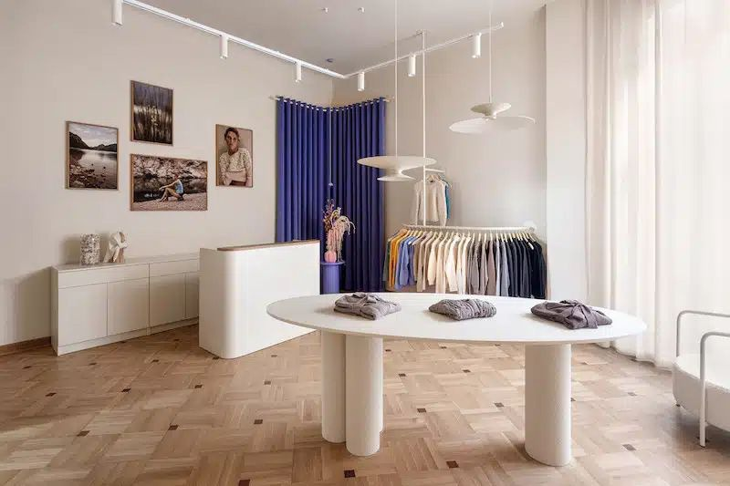
Wnętrze showroomu — stropy 4 m, dębowy parkietShowroom interior — 4 m ceilings, oak parquet
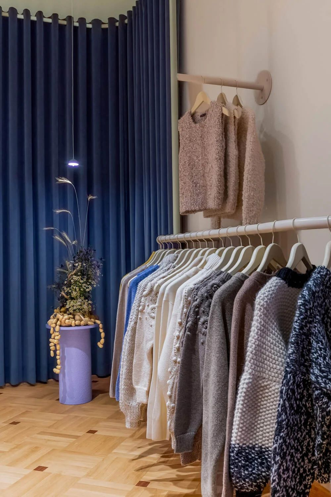
Ekspozycja dzianin przy granatowej kotarzeKnitwear display against the navy curtain
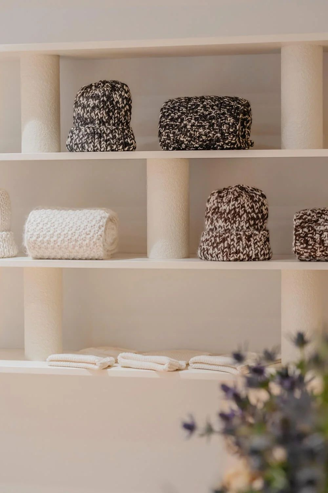
Wnękowe półki ekspozycyjne — detalRecessed display shelving — detail
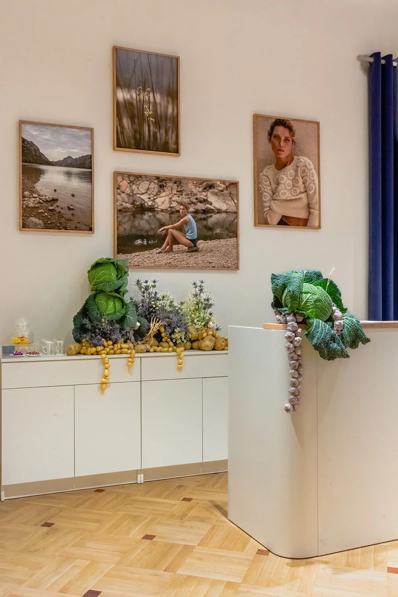
Instalacja kwiatowo-warzywna CosmosPlanteaFloral-vegetable installation by CosmosPlantea
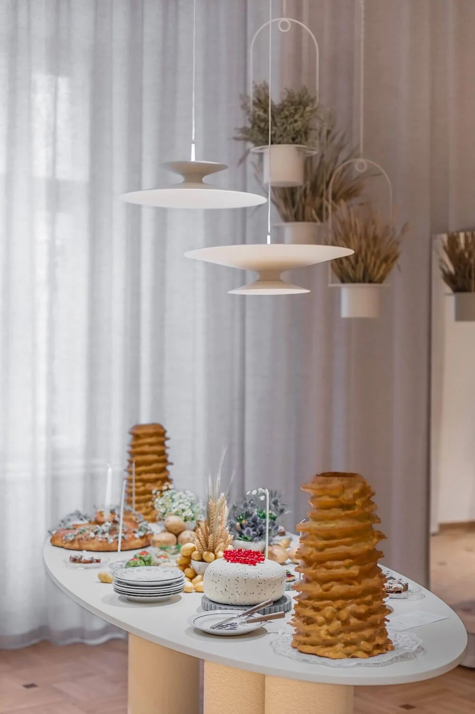
Stół przygotowany na otwarcie butikuTable set for the opening
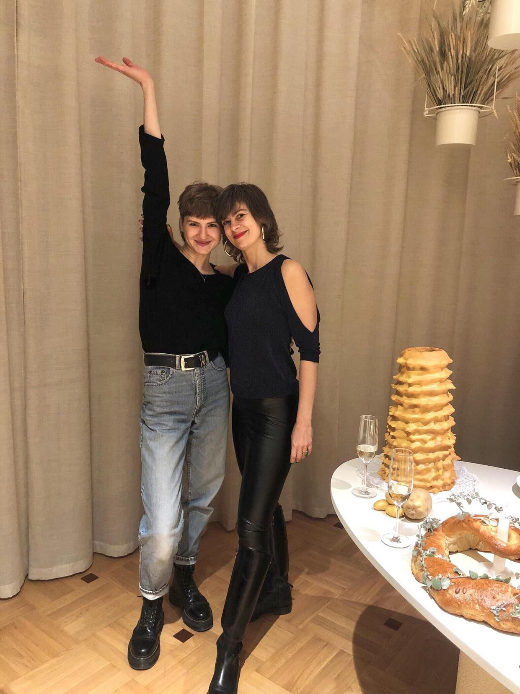
Otwarcie, 22 listopada 2022Opening, 22 November 2022
Współpraca. Projekt wnętrza: Zofia Strumiłło STUDIO — Zofia Strumiłło, Barbara Iwańska · Projekt wykończenia i wdrożenie: Barbara Iwańska · Mural: Magdalena Łapińska-Rozenbaum · Oświetlenie: Chors · Zieleń: Bujnie, CosmosPlantea · Fotografie: @w_srodku Collaboration. Interior design: Zofia Strumiłło STUDIO — Zofia Strumiłło, Barbara Iwańska · Finishes design and delivery: Barbara Iwańska · Mural: Magdalena Łapińska-Rozenbaum · Lighting: Chors · Planting: Bujnie, CosmosPlantea · Photography: @w_srodku
Rotunda Dynasy · M07
SalonLiving room
Mieszkanie pokazowe w inwestycji na Powiślu — prowadzenie procesu realizacji.
A show apartment in a Powiśle investment — leading the delivery process.
KontekstContext
Rotunda Dynasy to kameralna inwestycja w sercu Powiśla, wzniesiona na historycznych murach. Mieszkanie M07 miało pełnić funkcję pokazową — przekonywać nie metrażem, lecz sposobem życia, jaki ten metraż umożliwia. Projekt powstał w zewnętrznej pracowni; moim zadaniem było doprowadzenie go do realizacji w założonym standardzie i budżecie.
Rotunda Dynasy is an intimate investment in the heart of Powiśle, raised on historic walls. Apartment M07 was to serve as the show unit — persuading not by floor area but by the way of living that area makes possible. The design came from an external studio; my task was to carry it through to delivery at the assumed standard and budget.
ZakresScope
- Prowadziłam cały proces realizacji mieszkania pokazowego
- Odpowiadałam za akceptację materiałów i rozwiązań wykończeniowych
- Prowadziłam optymalizację kosztową i brałam udział w negocjacjach z wykonawcami
- Koordynowałam współpracę pracowni projektowej z wykonawcami
- Led the entire delivery process of the show apartment
- Owned the approval of materials and finishing solutions
- Ran cost optimisation and took part in contractor negotiations
- Coordinated the design studio with the contractors
EfektOutcome
- Mieszkanie pokazowe zrealizowane i wykorzystywane w komunikacji sprzedażowej inwestycji
- Show apartment delivered and used in the investment’s sales communication
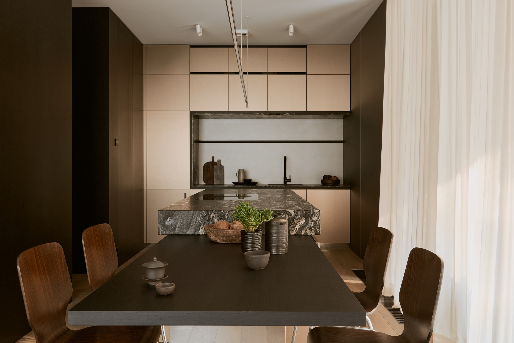
Jadalnia z aneksem kuchennymDining area with kitchenette
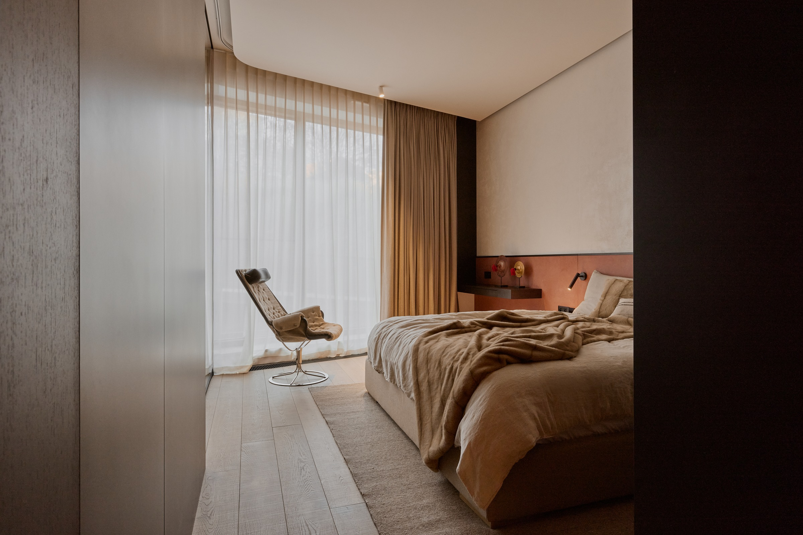
SypialniaBedroom
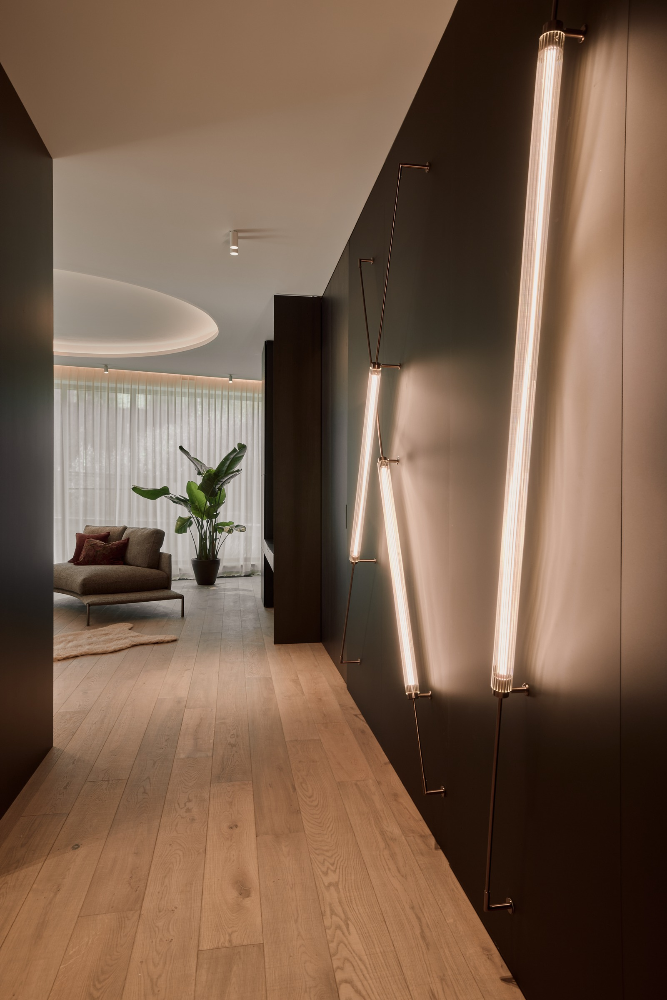
Korytarz z linią światłaCorridor with a line of light
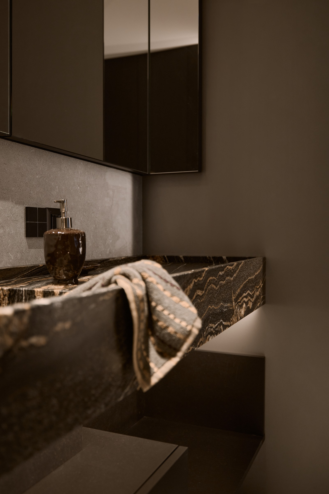
Detal — kamienny blatDetail — stone countertop
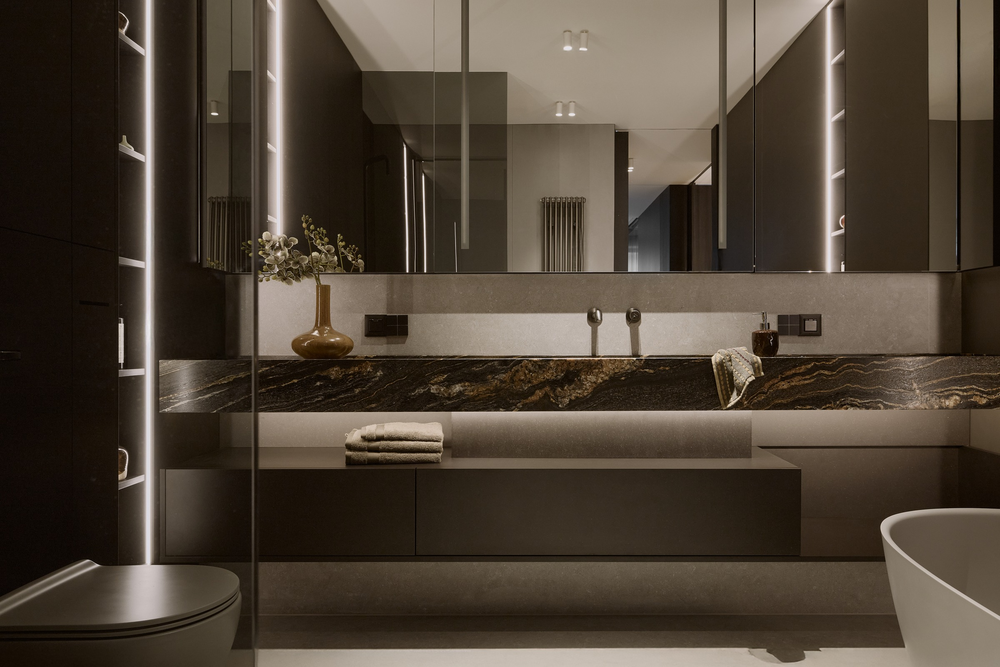
Łazienka — podwójna umywalkaBathroom — double vanity
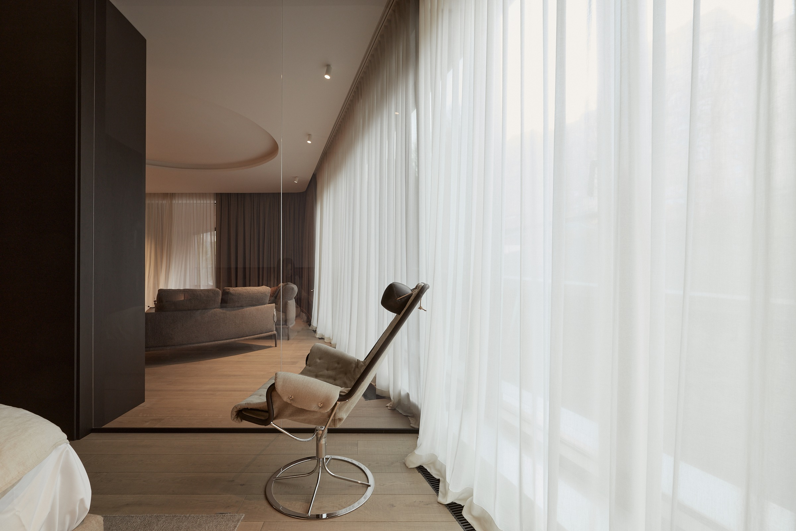
Łazienka w firanachBathroom behind sheer curtains
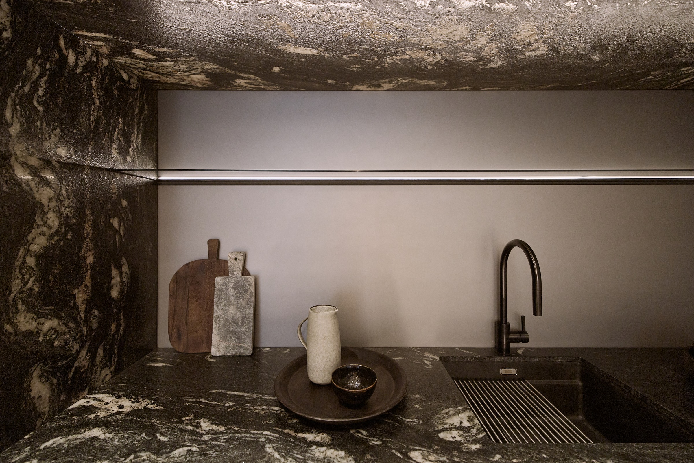
Detal kuchni — kamieńKitchen detail — stone
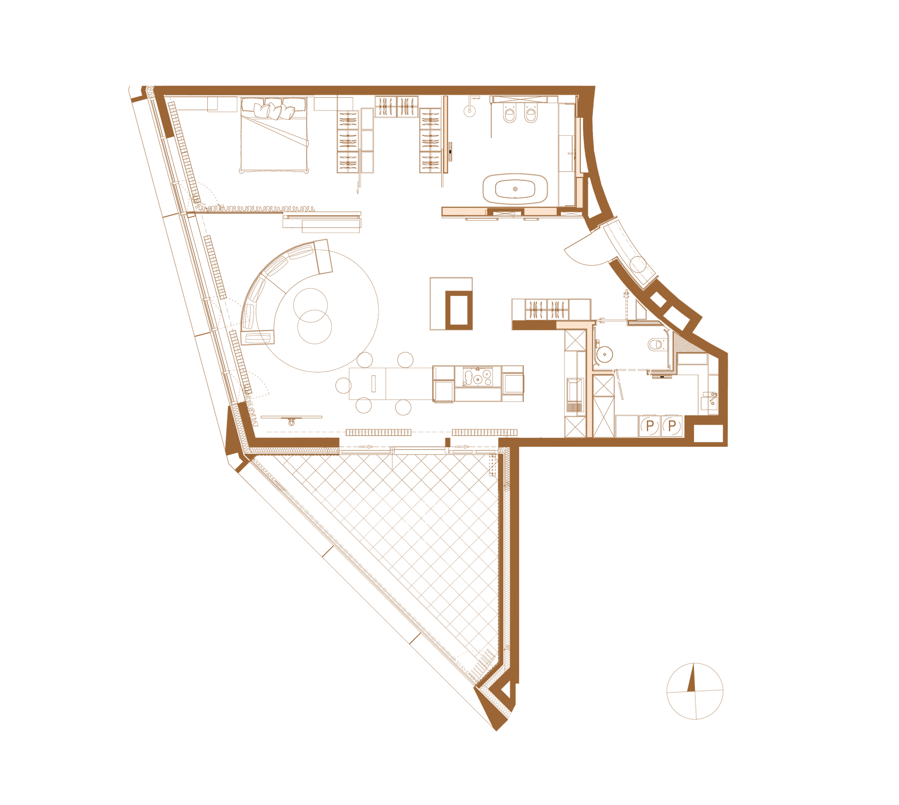
Rzut mieszkania M07Floor plan, apartment M07
Współpraca. Projekt wnętrza: Jakub Skowroński · Fotografie: mat. Marvipol Development. Collaboration. Interior design: Jakub Skowroński · Photography: courtesy of Marvipol Development.
ZakresScope
(Autorstwo / Realizacja)(Authorship / Delivery)Strategia produktu. Branding i naming. Narracja sprzedażowa. Projekt wnętrz. Prowadzenie realizacji. Art branding.
Product strategy. Branding & naming. Sales narrative. Interior design. Delivery & fit-out. Art branding.
Od nazwy do odbioru technicznego.From the name to the handover.
Strategia produktu i markiProduct & brand strategy
Naming, identyfikacja wizualna, architektura narracji, copywriting katalogów sprzedażowych. Pozycjonowanie inwestycji w segmencie premium.
Naming, visual identity, narrative architecture, sales-catalogue copywriting. Positioning investments in the premium segment.
Prowadzenie realizacjiDelivery leadership
Budżet, przetargi, negocjacje z dostawcami, optymalizacja materiałowa, nadzór nad wykończeniem. Dokumentacja projektowa i raportowanie do Zarządu.
Budget, tenders, supplier negotiations, material optimisation, supervision of finishing works. Design documentation and Board-level reporting.
Kuratela i art brandingCuration & art branding
Współpraca z artystami, kuratela programów wystawienniczych, wykorzystanie sztuki jako narzędzia PR budującego organiczne zasięgi.
Working with artists, curating exhibition programmes, using art as a PR instrument that builds organic reach.
DoświadczenieExperience
Pobierz pełne CVDownload full CVKontaktContact
NapiszGet in touch